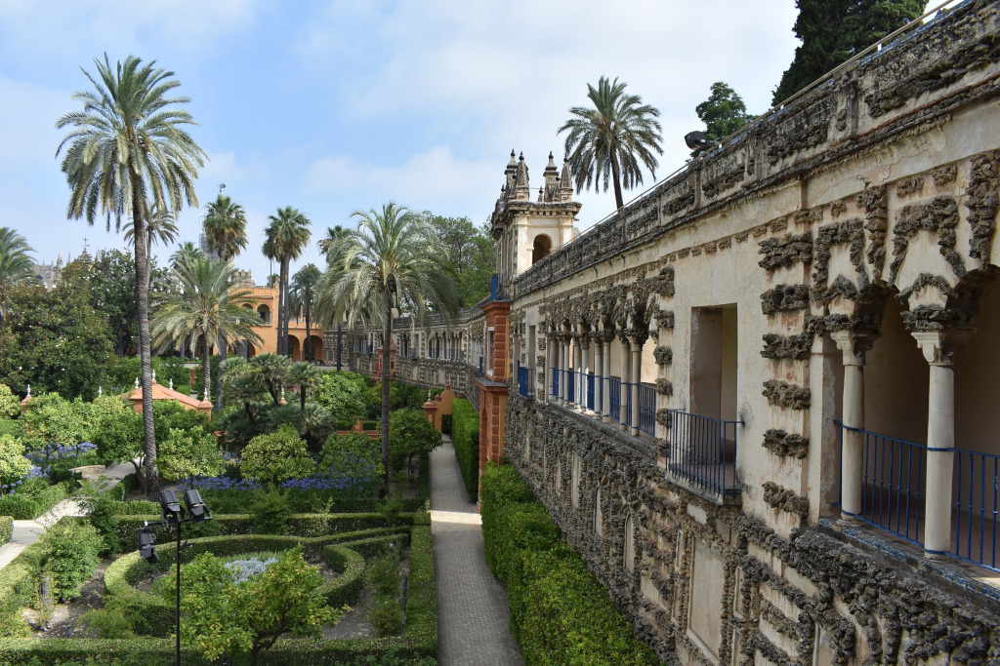
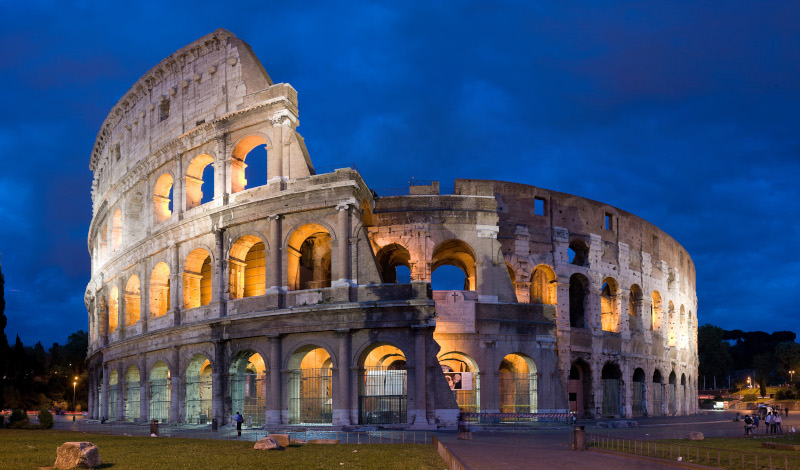

Contributed sessions to present your research in a young, collaborative, and relaxed environment.
Tutorial sessions to learn about useful techniques and tools.
Opportunities for networking and tutoring with our invited speakers.
The Feria de Abril in Seville.
The workshop takes place just after International Workers' Day (1 May) and just before Seville's major festival, the Feria de Abril (4-11 May).
Any question can be addressed to euroyoung+1workshop@protonmail.com.
We are pleased to invite you at the first EUROYoung Workshop, a great opportunity for young Operational Research scientists from EURO countries to get together in person.
Invited sessions.
These are talks given by prominent researchers; they aim at disseminating knowledge about their research work, but also to inspire you and provide you a broader view of research in the field of Operational Research.
Contributed sessions.
These are great chances to present your work to a relaxed, young, and propositive audience.
It doesn't matter if your research work is still in progress, everyone is welcome to share their results or the challenging problems they are tackling.
You can use these session to elicit feedback, find new collaborators, or even just rehearse your talk before the «big» conference.
To contribute a talk, use the sign-up Google Form to indicate you want to present, and send us the abstract.
A presentation is expected to last around 30 minutes (25 minutes talk + 5 minutes for questions and feedback).
Tutorial sessions.
During these sessions you can showcase a particular tool or technique you find interesting, useful, or just plain cool.
Did you just sped up your code by a factor of four profiling and setting the right compiler flags? Show us how!
Did you build a pipeline to run experiments, collect results, and analyse them? We want to know.
Did you couple your optimisation algorithm with a machine learning application? Tell us more.
Did you implement reproducible builds and experiments, tracking your code status with git? We are eager to learn.
To contribute a tutorial, use the sign-up Google Form to indicate you want to present.
A tutorial is expected to last anywhere between 30 and 60 minutes.
Networking and tutoring.
We have the great opportunity to have with us Ana Viana and Federico Perea, and we are determined to squeeze all the energy out of them!
Ana and Federico are not only world-class established researchers, but also inspirational leaders in our field.
Do not miss the opportunity to network with them and ask for their suggestions on whatever topic: be it related to research, carreer, academic life, etc.
The workshop is organised by the EUROYoung network, which is a group of young O.R. scientists promoting collaboration among students and early-career researchers, organising training events, providing networking opportunities with leaders in our field, and matching demand and offer in the O.R. job market.
A few EUROYoung members at the EURO2018 conference.
The organising committee:
Marina Leal, University of Seville
Moises Rodriguez, University of Seville
Alberto Santini, Universitat Pompeu Fabra
Martina Fischetti, Vattenfall
Lavinia Amorosi, La Sapienza University of Rome
The workshop has been made possible thanks to the contribution of:
Most of all, Marina and Moíses, the local organisers!
Programme
Thursday, 2 May 2019
08:45 - 09:00
Registration
09:00 - 09:30
Opening session
09:30 - 11:15
Contributed sessions
11:15 - 11:45
Coffee break and networking
11:45 - 13:30
Contributed sessions
13:30 - 15:00
Lunch at the canteen of the Language Institute
15:00 - 16:00
Plenary: Ana Viana
16:00 - 16:15
Coffee break and networking
16:15 - 17:00
Tutorial
18:00
Guided tour to the Real Alcázar of Seville and the historic Barrio Santa Cruz
Friday, 3 May 2019
09:00 - 10:30
Contributed sessions
10:30 - 11:00
Coffee break and networking
11:00 - 12:30
Contributed sessions
12:30 - 13:30
Plenary: Federico Perea
13:30 - 15:00
Lunch at the canteen of the Language Institute
15:00 - 16:30
Contributed sessions
16:30 - 17:00
Coffee break and networking
17:00 - 17:45
Tutorial
17:45 - 18:00
Closing session
21:00
Social dinner
Social and Cultural Activities
2 May: Visit to the Real Alcázar of Seville and the historic Barrio Santa Cruz 3 May: Social dinner at Blanca Paloma

Sevilla, Real Alcázar.
Travel and Accommodation
Getting to Seville
Sevilla has an international airport (SVQ) located at just 25 minutes from the city.
A special bus shuttle runs about every 15 minutes, and costs 4 euros.
Taxis have fixed-fee fares of 22 euros during day, and 25 euros during night.
Another option is to fly to Jerez de la Frontera (XRY) which is also served by low-cost airlines.
The airport has its own train station and the Cádiz-Seville line passes through it, so it's easy to take a train to Seville directly from the airport.
Other than by air, you might want to arrive by train.
The high-speed train AVE serves Seville and connects it with Cordoba (less than 1 hour), Toledo (about 2 hours) and Madrid (less than 3 hours), among other cities.
Seville is also served by mid-distance and short-distance trains, connecting it to other cities in Spain.
Finally, there are night train services, such as the Barcelona-Seville line.
All tickets can be purchased on the website of Renfe.
Getting around in Seville
Seville has an amazing and very walkable city centre.
The city also has various public transport options, including a metro line, a tram line and about 40 bus lines, operated by TUSSAM.
Accommodation
The acommodation provided by the workshop is in single and double rooms at two residences in the vicinity of the University:
Residencia Universitaria Rector Estanislao del Campo
and
Colegio Mayor Hernando Colón.
The booking needs to be done via the secretary of the University of Sevilla and, therefore, the participants should not contact the residences directly, as they would not be able to book.
Pictures from the two residences where participants can stay for free (rooms are assigned on a first-come first-serve basis, to the first 48 participants).
Sign up
Applications are now open and can be submitted via
this Google Form.
In the form, you can specify if you want to apply for free accommodation (and for which nights) and if you want to submit a talk or a tutorial.
Can I benefit from the free accommodation?
We will contact the participants who enrolled among the first 48 (and, therefore, are offered free accommodation) during the second half of February.
These participants are temporarily pre-registered and are asked to send a proof of travel (for example, an air ticket).
Upon reception of the proof of travel, their registration is confirmed and the accommodation is firmly booked.
How can I extend my stay for a few days before or after?
When you send us the proof of travel, you can also ask for more days of stay at the residences.
These extra days are at your own expense, and only upon availability.
Since the residences tend to be quite busy during those days we cannot guarantee that it will be possible to accommodate your request, but we will try our best.
Sevilla, Plaza de España.
Partner Initiatives
2019 is going to be a great year for young O.R. researchers, with many initiatives organised throughout Europe.
Here we list some of them:

Rome, hosting the third AIROYoung Workshop and PhD School.El Escorial, hosting the second Spanish Young Statisticians and Operational Researchers Meeting.